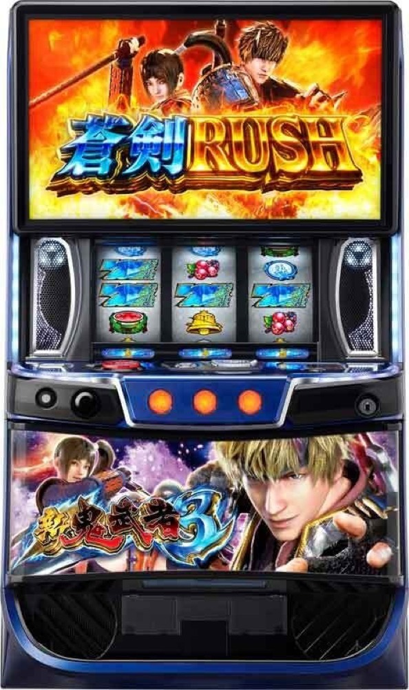

スマスロ 新鬼武者3
周期と鬼斬チャージから蒼剣RUSHへ。真蒼剣RUSHは純増約5.5枚。
- 導入
- 2025年10月
- メーカー
- レオスター
- 分類
- パチスロ
主要スペック
ゲーム数上乗せとセット継続を重ね、期待枚数約3600枚の上位ATを目指します。
- 設定1 AT約1/379.7
- 設定6 AT約1/293.1
- 上位純増約5.5枚/G
スマスロ 新鬼武者3の見どころと計算条件
ゲーム数上乗せとセット継続を重ね、期待枚数約3600枚の上位ATを目指します。
新鬼武者3を数字で早分かり
鬼斬チャージから蒼剣RUSH、真蒼剣RUSHまでの流れと、設定ごとの結果差を固定レートで比較できます。
設定別AT初当り
蒼剣RUSH初当りは設定1約1/379.7から設定6約1/293.1。機械割は97.5%〜113.0%です。
開始時に設定1〜6を均等抽選し、結果画面で発表します。
蒼剣RUSHから真蒼剣RUSHへ
通常ATは純増約2.5枚/G、ボーナスは約4.6枚/G。ゲーム数上乗せとセット継続で出玉を伸ばします。
上位の真蒼剣RUSHは純増約5.5枚/G・継続率89%として簡易化しています。
平均Gと投資目安の計算
掲載する蒼剣RUSH初当り約1/379.7は設定1基準です。当サイトでは50枚あたり33G、1,000円46枚貸しの固定条件から、設定1基準の平均投資目安を約12,500円と計算します。
シミュレーターでは設定1〜6を均等抽選します。設定1〜6で公開されている初当り値を個別に使います。公開されていない特化ゾーン・上位到達率の設定差は加えません。 換金は5.2枚交換で固定し、結果とランキングに設定を表示します。
シミュレーション結果の見方
当るまで鬼斬チャージ・蒼剣RUSHまでのゲーム数
設定設定1・2・3・4・5・6から抽選された今回の設定
上位到達覚醒チャレンジと真蒼剣RUSHへの到達
最終収支差枚と5.2枚交換の収支目安
結果は自動で「マイ記録」に保存され、同じ機種を何回試したか、最高収支、勝率をあとから確認できます。
簡易シミュレーターについて
鬼斬チャージ・蒼剣RUSH・真蒼剣RUSHの流れを固定条件で体験できます。JavaScriptを有効にすると、この位置にシミュレーター、演出、マイ記録、機種別ランキングが表示されます。
結果は娯楽・確率理解のための参考表示です。金銭的価値や交換価値はなく、実際の勝敗や収支を保証しません。18歳未満の方の利用はお控えください。
新鬼武者3のよくある質問
新鬼武者3はどんな台？
ゲーム数上乗せとセット継続を重ね、期待枚数約3600枚の上位ATを目指します。 設定1 AT約1/379.7が主な確認ポイントです。
新鬼武者3の平均投資目安は？
設定1基準の蒼剣RUSH初当り約1/379.7と、50枚あたり33G・46枚貸しの固定条件から、平均12,500円を目安として表示します。実際の設定や遊技状況で結果は変わります。
設定とゲームの流れはどう抽選する？
開始時に設定1・2・3・4・5・6から1つを均等抽選し、鬼斬チャージ、蒼剣RUSH、覚醒チャレンジ、真蒼剣RUSHの順で到達を判定します。設定は最終結果とランキングに表示します。
収支はどう計算する？
1,000円46枚貸し・5.2枚交換の固定条件で投資、換金、収支目安を計算します。実店舗の再プレイ、持ちメダル、端数処理は含みません。